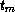
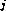

Common Lisp the Language, 2nd Edition

By far the most common kind of series operation is mapping. In cognizance
of this fact, four different ways are provided for specifying mapping: one
fundamental form (map-fn) and three shorthand forms that are more
convenient in particular common situations.
[Function]
map-fn type function &rest series-inputs
The higher-order function map-fn supports the general concept of
mapping. The type argument is a type specifier indicating
the type of values returned by function. The values
construct can be used to indicate multiple types; however, type
cannot indicate zero values. If type indicates m types
 ,
then map-fn returns m series
T1, ..., Tm, where Ti has the
type (series ).
The argument
function is a function. The remaining arguments (if any) are all
series. Let these series be S1, ..., Sn and suppose that
Si has the type (series ).
,
then map-fn returns m series
T1, ..., Tm, where Ti has the
type (series ).
The argument
function is a function. The remaining arguments (if any) are all
series. Let these series be S1, ..., Sn and suppose that
Si has the type (series ).
The function must be of type
(function (... ) (values ... ))
The length of each output is the same as the length of the shortest input. If there are no bounded series inputs, the outputs are unbounded. The elements of the Ti are the results of applying function to the corresponding elements of the series inputs.
(values T1 ... Tm) == (funcall function S1 ... Sn)
If function has side effects, it can count on being called first on
the Si, then on the Si , and so on. However, given
the lazy evaluation nature of series, function will not be called on
any group of input elements until the result is actually used (if ever).
In addition, no assumptions can be made about the relative order of
evaluation of the calls on function with regard to execution in other parts of a
given series expression.
, and so on. However, given
the lazy evaluation nature of series, function will not be called on
any group of input elements until the result is actually used (if ever).
In addition, no assumptions can be made about the relative order of
evaluation of the calls on function with regard to execution in other parts of a
given series expression.
(map-fn 'integer #'+ #Z(1 2 3) #Z(4 5)) => #Z(5 7) (map-fn t #'gensym) => #Z(#:G3 #:G4 #:G5 ...)
(map-fn '(values integer rational) #'floor #Z(1/4 9/5 12/3)) => #Z(0 1 4) and #Z(1/4 4/5 0)
The # macro character syntax #M makes it easy to specify uses of map-fn where type is t and the function is a named function. The notation (#Mfunction ...) is an abbreviation for (map-fn t #'function ...). The form function can be the printed representation of any Lisp object. The notation #Mfunction can appear only in the function position of a list.
(collect (#M1+ (scan '(1 2 3)))) => (2 3 4)
[Macro]
mapping ({({var | ({var}*)} value)}*) {declaration}* {form}*
The macro mapping makes it easy to specify uses of map-fn where type is t and the function is a literal lambda. The syntax of mapping is analogous to that of let. The binding list specifies zero or more variables that are bound in parallel to successive values of series. The value part of each pair is an expression that must produce a series. The declarations and forms are treated as the body of a lambda expression that is mapped over the series values. A series of the first values returned by this lambda expression is returned as the result of mapping.
(mapping ((x r) (y s)) ...) == (map-fn t #'(lambda (x y) ...) r s)
(mapping ((x (scan '(2 -2 3)))) (expt (abs x) 3)) => #Z(8 8 27)
The form mapping supports a special syntax that facilitates the use of series functions returning multiple values. Instead of being a single variable, the variable part of a var-value pair can be a list of variables. This list is treated the same way as the first argument to multiple-value-bind and can be used to access the elements of multiple series returned by a series function.
(mapping (((i v) (scan-plist '(a 1 b 2)))) (list i v)) => #Z((a 1) (b 2))
[Macro]
iterate ({({var | ({var}*)} value)}*) {declaration}* {form}*
The form iterate is the same as mapping, except that after mapping the forms over the values, the results are discarded and nil is returned.
(let ((item (scan '((1) (-2) (3)))))
(iterate ((x (#Mcar item)))
(if (plusp x) (prin1 x))))
=> nil (after printing ``13'')
To a first approximation, iterate and mapping differ in the same way as mapc and mapcar. In particular, like mapc, iterate is intended to be used in situations where the forms are being evaluated for side effects rather than for their results. However, given the lazy evaluation semantics of series, the difference between iterate and mapping is more than just a question of efficiency.
If mapcar is used in a situation where the output is not used, time is
wasted unnecessarily creating the output list. However, if mapping is
used in a situation where the output is not used, no computation is
performed, because series elements are not computed until they are used.
Thus iterate can be thought of as a declaration that the indicated
computation is to be performed even though the output is not used for
anything.